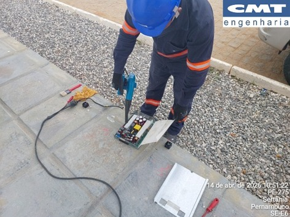
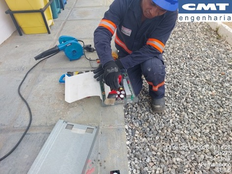

Cronograma de desligamentos das SEs

Linha do tempo

linha do tempo
Instrumentos de medição

instrumentos de medição

instrumentos de medição
Troca de conector terminal do TP

conector terminal do TP

conector terminal do TP

conector terminal do TP
Troca de componente metálico de seccionadoras

componente de seccionadoras

componente de seccionadoras
Correção de oxidação (TSA-01)

antes

depois
Correção de oxidação (cubículo)

antes

depois
Atividades diversas

atividades diversas

atividades diversas

atividades diversas

atividades diversas
Buchas do transformador


TC e isoladores


Retificador




Chave-seccionadora

Ajuste dos conectores dos pulos em “T”

Ajuste dos conectores dos pulos em “T”

Verificação dos contrapinos (cupilhas)

Limpeza dos conectores e contatos
Conectores do transformador de corrente

conectores do TC

conectores do TC
Terminais de borne dos quadros e painéis

terminais de borne

terminais de borne